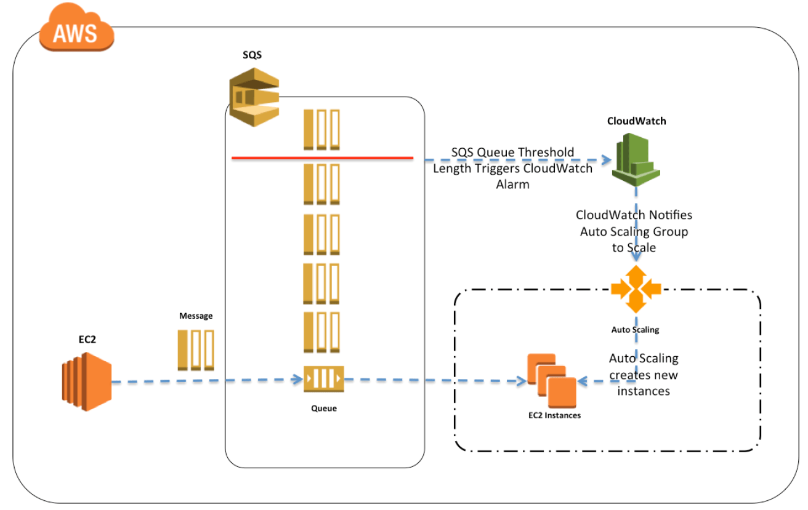
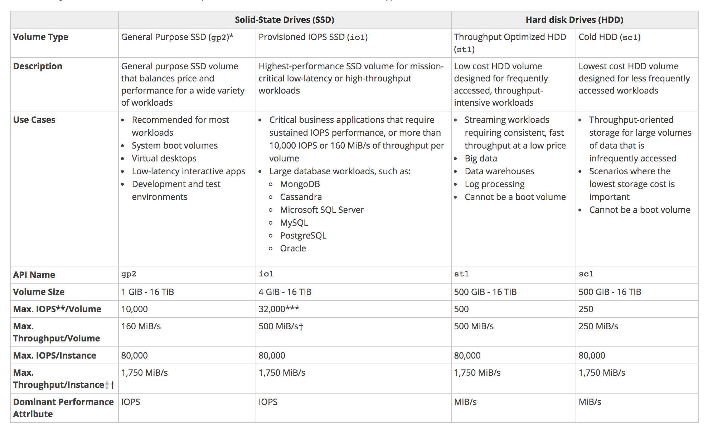

Test Report
Review questions
Jun 17, 2019 03:24AM EDT
 8 correct
8 correct 57 incorrect
57 incorrectYour answer
B. EBS Throughput Optimized HDD
C. EBS General Purpose SSD
D. EBS Cold HDD
Correct answer is B as Throughput Optimized HDD is best suited for the large sequential I/O workloads usually involving big data and ETL jobs.
Refer AWS documentation - EBS Volume Types
Throughput Optimized HDD (st1) volumes provide low-cost magnetic storage that defines performance in terms of throughput rather than IOPS. This volume type is a good fit for large, sequential workloads such as Amazon EMR, ETL, data warehouses, and log processing. Bootable st1 volumes are not supported.
Throughput Optimized HDD (st1) volumes, though similar to Cold HDD (sc1) volumes, are designed to support frequently accessed data.
This volume type is optimized for workloads involving large, sequential I/O, and we recommend that customers with workloads performing small, random I/O use gp2.
Your answer
B. Stripe the data across multiple Amazon EBS volumes
C. Switch to a Multi-AZ RDS database
D. Take hourly database snapshots
Correct answer is A as Read Replicas helps RDS instance to scale out and can be used to offload intensive read operations from the primary database.
Refer AWS documentation - RDS Read Replicas
Amazon RDS Read Replicas provide enhanced performance and durability for database (DB) instances. This feature makes it easy to elastically scale out beyond the capacity constraints of a single DB instance for read-heavy database workloads. You can create one or more replicas of a given source DB Instance and serve high-volume application read traffic from multiple copies of your data, thereby increasing aggregate read throughput.
Option B is wrong as RDS does not expose EBS volumes.
Option C is wrong as Multi-AZ is a High Availability solution and not a scalable solution.
Option D is wrong as snapshots allow ability to recover the DB and would not help improve performance.
Points : 3 out of 3
Your answer
B. The instance in the availability zone that has most instances
C. The instance closest to the next billing hour
D. The oldest instance in the group
Correct answer is B as there are 15 instances, the distribution across the 2 AZs is skewed. Hence, by default, an instance in the AZ with the most instances would be terminated.
Refer AWS documentation - Auto Scaling Termination Policy
Default Termination Policy
The default termination policy is designed to help ensure that your network architecture spans Availability Zones evenly. With the default termination policy, the behavior of the Auto Scaling group is as follows:
- If there are instances in multiple Availability Zones, choose the Availability Zone with the most instances and at least one instance that is not protected from scale in. If there is more than one Availability Zone with this number of instances, choose the Availability Zone with the instances that use the oldest launch configuration.
- Determine which unprotected instances in the selected Availability Zone use the oldest launch configuration. If there is one such instance, terminate it.
- If there are multiple instances to terminate based on the above criteria, determine which unprotected instances are closest to the next billing hour. (This helps you maximize the use of your EC2 instances and manage your Amazon EC2 usage costs.) If there is one such instance, terminate it.
- If there is more than one unprotected instance closest to the next billing hour, choose one of these instances at random.
Your answer
B. Generate a pre-signed object URL for the premier content file when a paid subscriber requests a download
C. Add a bucket policy that requires Multi-Factor Authentication for requests to access the S3 bucket objects
D. Enable server side encryption on the S3 bucket for data protection against the non-paying website visitors
Correct answer is B as pre signed urls can be used to allow paid users to download the objects.
All objects in S3 by default are private. Only the object owner has permission to access these objects. However, the object owner can optionally share objects with others by creating a pre-signed URL, using their own security credentials, to grant time-limited permission to download the objects.
Refer to AWS documentation for S3 Share Object Pre Signed URL
Option A, C and D are wrong as they do not prevent or limit the user from downloading the objects
Your answer
B. Assign existing IAM role to the Amazon EC2 instances in the new region
C. Copy the IAM role and associated policies to the new region and attach it to the instances
D. Create an Amazon Machine Image (AMI) of the instance and copy it to the desired region using the AMI Copy feature
Correct answer is B as IAM Role are global and are valid across regions. IAM role once created can be assigned to EC2 instances launched across regions
IAM Role are global. No region is required to be specified when you define IAM Role and can use AWS services in any geographic region.
Your answer
B. Configure a proxy on Amazon EC2 and use an Amazon S3 VPC endpoint
C. Use Amazon API Gateway to do IP whitelisting.
D. Configure IP whitelisting on the customers gateway.
Correct answer is B as S3 is a public service if accessed directly from the on-premises instances, the request is routed through internet and would not be routed through the VPN connection. For enabling access, the on-premises instances can connect to an proxy on EC2 via VPN which can then help route request to S3 through VPC endpoint.
The instances in the VPN-only subnet can't reach the Internet directly; any Internet-bound traffic must first traverse the virtual private gateway to your network, where the traffic is then subject to your firewall and corporate security policies. If the instances send any AWS-bound traffic (for example, requests to the Amazon S3 or Amazon EC2 APIs), the requests must go over the virtual private gateway to your network and then egress to the Internet before reaching AWS. Currently, we do not support IPv6 for VPN connections.
Any traffic from your network going to an Elastic IP address for an instance in the public subnet goes over the Internet, and not over the virtual private gateway. You could instead set up a route and security group rules that enable the traffic to come from your network over the virtual private gateway to the public subnet.
Option A is wrong as IAM role would not help access S3 from on-premises through VPN.
Option C is wrong as API Gateway would need to be accessed from internet.
Option D is wrong as IP whitelisting on customers gateway would not help S3 access.
Your answer
B. Microsoft SQL Server
C. Oracle
D. Amazon Aurora
Correct answer is D as Amazon Aurora
Refer AWS documentation - RDS Aurora & Aurora Replication
Amazon Aurora (Aurora) is a fully managed, MySQL- and PostgreSQL-compatible, relational database engine. It combines the speed and reliability of high-end commercial databases with the simplicity and cost-effectiveness of open-source databases.
Aurora Replicas are independent endpoints in an Aurora DB cluster, best used for scaling read operations and increasing availability. Up to 15 Aurora Replicas can be distributed across the Availability Zones that a DB cluster spans within an AWS Region. The DB cluster volume is made up of multiple copies of the data for the DB cluster. However, the data in the cluster volume is represented as a single, logical volume to the primary instance and to Aurora Replicas in the DB cluster.
As a result, all Aurora Replicas return the same data for query results with minimal replica lag—usually much less than 100 milliseconds after the primary instance has written an update. Replica lag varies depending on the rate of database change. That is, during periods where a large amount of write operations occur for the database, you might see an increase in replica lag.
Option A is wrong as MySQL as the maximum size supported is 16TB, which would not suffice for the requirement. Also, the replica lag of sub 100 milliseconds may not be possible.
Option B & C are wrong as Microsoft SQL Server and Oracle do not support read replicas.
Your answer
B. Add Auto Scaling with minimum capacity as 1 and maximum capacity as two
C. Change the instance type to t2.large
D. Host the web service using Lambda
Correct answer is D as Lambda can be used to host the web service with minimal effort, which would scale as per the demand and you pay as per the usage. There are no charges for idle time.
Refer AWS documentation - Lambda
AWS Lambda is a compute service that lets you run code without provisioning or managing servers. AWS Lambda executes your code only when needed and scales automatically, from a few requests per day to thousands per second. You pay only for the compute time you consume - there is no charge when your code is not running. With AWS Lambda, you can run code for virtually any type of application or backend service - all with zero administration. AWS Lambda runs your code on a high-availability compute infrastructure and performs all of the administration of the compute resources, including server and operating system maintenance, capacity provisioning and automatic scaling, code monitoring and logging.
Option A is wrong as Auto Scaling with 1 min and max capacity would provide High Availability, but does not improve the performance for reduce cost.
Option B is wrong as Auto Scaling with 1 min and 2 max capacity would provide High Availability and little better performance, but does not reduce cost.
Option C is wrong as reducing the instance type would reduce cost, however does not provide scalability and High Availability.
Your answer
B. Recreate the API using Amazon API Gateway and use AWS Lambda as the service backend.
C. Create an Auto Scaling group with a minimum and a maximum of two instances, then use an Application Load Balancer to balance the traffic.
D. Recreate the API using Amazon API Gateway and integrate the new API with the existing backend service.
Correct answer is B as the most cost effective solution would be to implement serverless architecture using API gateway with Lambda without having to manage the compute resources.
Amazon API Gateway tightly integrates with AWS Lambda to allow you to create completely serverless APIs. With Amazon API Gateway, you create REST APIs that your mobile and web applications can use to call publicly available AWS services through your code running in AWS Lambda. AWS Lambda runs your code on a high-availability compute infrastructure and performs all the heavy lifting and administration of your compute resources.
Option A, C & D are wrong as running 24x7 compute resources is an expensive solution.
Your answer
B. Create a CloudFront distribution
C. Convert the database to use EBS provisioned IOPS
D. Create one or more read replicas.
Correct answer is D as read replicas can help reduce the load on the primary database and help improve performance.
Refer AWS documentation - Aurora Read Replicas
Aurora Replicas are independent endpoints in an Aurora DB cluster, best used for scaling read operations and increasing availability. Up to 15 Aurora Replicas can be distributed across the Availability Zones that a DB cluster spans within an AWS Region. The DB cluster volume is made up of multiple copies of the data for the DB cluster. However, the data in the cluster volume is represented as a single, logical volume to the primary instance and to Aurora Replicas in the DB cluster.
As a result, all Aurora Replicas return the same data for query results with minimal replica lag—usually much less than 100 milliseconds after the primary instance has written an update. Replica lag varies depending on the rate of database change. That is, during periods where a large amount of write operations occur for the database, you might see an increase in replica lag.
Aurora Replicas work well for read scaling because they are fully dedicated to read operations on your cluster volume. Write operations are managed by the primary instance. Because the cluster volume is shared among all DB instances in your DB cluster, minimal additional work is required to replicate a copy of the data for each Aurora Replica.
Option A is wrong as Redshift is more of a data warehouse solution, rather than a database.
Option B is wrong as CloudFront distribution is for caching contents from web application. It does not integrate directly with RDS.
Option C is wrong as Aurora does not expose underlying volumes.
Your answer
B. Use the ReceiveMessage API call to retrieve the message, the ChangeMessageVisibility API call to lower the visibility timeout, and the DeleteMessage API call to delete the message when processing completes.
C. Use the ReceiveMessage API call to retrieve the message, the ChangeMessageVisibility API call to increase the visibility timeout, and the DeleteMessage API call to delete the message when processing completes
D. Use the ReceiveMessage API call to retrieve the message and the DeleteMessage API call to delete the message when processing completes.
Correct answer is C as the default Visibility Timeout is 30 seconds, but the application takes 60 seconds to process the instructions from the message. It is therefore necessary to increase the Visibility Timeout of the message to prevent it from becoming visible in the queue for other instances to process while it is still being processed by the first instance. (Another solution could be to increase the visibility timeout of the entire queue.) It is also necessary for the instance to delete the message from the queue once it has finished processing it, otherwise the message will become visible in the queue after the Visibility Timeout expires.
Refer AWS documentation - SQS Visibility Timeout
Each queue starts with a default setting of 30 seconds for the visibility timeout. You can change that setting for the entire queue. Typically, you'll set the visibility timeout to the average time it takes to process and delete a message from the queue. When receiving messages, you can also set a special visibility timeout for the returned messages without changing the overall queue timeout.
Your answer
B. You should use Gateway-Cached Volumes. You will have quicker access to the data, and it is a more preferred backup solution than Gateway-Stored volumes.
C. It doesn't matter whether you use Gateway-Cached volumes or Gateway-Stored volumes as long as you also combine either of these solutions with the Gateway-Virtual Tape Library (VTL).
D. You should use Gateway-Stored Volumes as it is preferable to Gateway-Cached Volumes as a backup storage medium.
Correct answer is D as the question mainly targets backup strategy, it would make sense to use Gateway Storage to have the backups in AWS while the data also resides on-premises. Gateway cached volume is mainly an actual storage option, where the entire data sits in AWS, which only the frequently accessed data on premises for low latency access.
Refer AWS documentation - Storage gateway
- Cached Volumes – You store your data in Amazon Simple Storage Service (Amazon S3) and retain a copy of frequently accessed data subsets locally. Cached volumes offer a substantial cost savings on primary storage and minimize the need to scale your storage on-premises. You also retain low-latency access to your frequently accessed data.
- Stored Volumes – If you need low-latency access to your entire data set, you can configure your on-premises gateway to store all your data locally and then asynchronously back up point-in-time snapshots of this data to Amazon S3. This configuration provides durable and inexpensive off-site backups that you can recover to your local data center or Amazon EC2. For example, if you need replacement capacity for disaster recovery, you can recover the backups to Amazon EC2.
Your answer
B. Create a bastion host with security group rules that only allow traffic from the corporate network.
C. Attach an IAM role to the bastion host with relevant permissions.
D. Configure the web servers security group to allow SSH traffic from a bastion host.
E. Deny all SSH traffic from the corporate network in the inbound network ACL.
D. Configure the web servers security group to allow SSH traffic from a bastion host.
Correct answer are B & D. To allow secure access you would need a Bastion host in public subnet which allows access from only the corporate network, which is controlled with security groups. The instances in private subnet can then be configured to allow SSH access only from bastion hosts.

Option A is wrong as Bastion host cannot authenticate to corporate network.
Option C is wrong as IAM role is used to access AWS Services and would not control SSH access to instances.
Option E is wrong as Deny in ACL would not allow access to corporate network.
Your answer
B. Federate IAM against corporate AD that requires MFA
C. Use Amazon API Gateway and require SSE for photos
D. Use Amazon Cognito Identity with SMS-based MFA
Correct answer is D as AWS Cognito provides an AWS managed secure solution with no maintenance and easy integration with other identity providers. It also supports MFA using SMS.
Q: What is Amazon Cognito?
Amazon Cognito lets you easily add user sign-up and authentication to your mobile and web apps. Amazon Cognito also enables you to authenticate users through an external identity provider and provides temporary security credentials to access your app’s backend resources in AWS or any service behind Amazon API Gateway. Amazon Cognito works with external identity providers that support SAML or OpenID Connect, social identity providers (such as Facebook, Twitter, Amazon) and you can also integrate your own identity provider.
Q: Does Cognito Identity support SMS-based multi-factor authentication (MFA)?
Yes, you can enable the end users of your application to sign in with SMS-based MFA. With SMS-based MFA enabled, your users will be prompted for their password (the first factor—what they know), and for a security code that can only be received on their mobile phone via SMS (the second factor—what they have).
Your answer
B. The instance gets quarantined by the ELB for root cause analysis.
C. The instance is replaced automatically by the ELB.
D. The ELB stops sending traffic to the instance that failed its health check
Correct answer id D as ELB performs health check on the instances and if the Health check fails, it will stop sending traffic to it
Refer AWS documentation - ELB Health Checks
The load balancer routes requests only to the healthy instances. When the load balancer determines that an instance is unhealthy, it stops routing requests to that instance. The load balancer resumes routing requests to the instance when it has been restored to a healthy state.
Option A & C are wrong as instance termination and replacement is performed by Auto Scaling.
Your answer
B. Run EC2 instances in multiple Regions and leverage Route 53’s Latency Based Routing capabilities to route traffic to the appropriate region to create their profile
C. Run EC2 instances in multiple Regions and leverage a third-party data provider to determine if a user needs to be redirect to the appropriate region to create their profile
D. Run EC2 instances in multiple AWS Availability Zones in a single Region and leverage a third-party data provider to determine if a user needs to be redirect to the appropriate zone to create their profile
Correct answer is C as the key here is the compliance requirement of data not leaving the region. Can use a third-party provider to correctly determine the region to route the traffic to.
Option B is wrong as Latency based routing policy would not guarantee the compliance requirement and it might route the traffic to different region based on the latency
Refer AWS documentation - Route 53 Latency Based Routing
Amazon Route 53 latency-based routing lets you use DNS to route user requests to the Amazon EC2 region that will give your users the fastest response.
Latency between hosts on the Internet can change over time as a result of changes in network connectivity and routing. Latency-based routing is based on latency measurements performed over a period of time, and the measurements reflect these changes. For example, if you have load balancers in the Oregon and Singapore Amazon EC2 regions, a request that is routed to the Oregon region this week might be routed to the Singapore region next week if latency from the user to the Singapore region improves.
Option A & D are wrong as the data should be in 2 different regions – US and Europe, as that the data does not traverse across region
Your answer
B. Reboot your instance so that the operating system will have a chance to boot in a clean healthy state that most likely will fix the ‘impaired” system status
C. Add another dynamic private IP address to me instance and try to connect via that new path, since the networking stack of the OS may be locked up causing the “impaired” system status.
D. Add another Elastic Network Interface to the instance and try to connect via that new path since the networking stack of the OS may be locked up causing the “impaired” system status
E. un-map and then re-map the EIP to the instance, since the IGW/NAT gateway may not be working properly, causing the “impaired” system status
Correct answer is A
- For an instance using an Amazon EBS-backed AMI, stop and restart the instance.
- For an instance using an instance-store backed AMI, terminate the instance and launch a replacement.
Option B is wrong as reboot does not help and launches the instance on the same machine & host.
Refer AWS documentation - EC2 Troubleshooting Initial steps
Points : 3 out of 3
Your answer
B. Add an additional ENI to the test instance
C. Use the EBS optimized option to offload EBS traffic
D. Configure Amazon CloudWatch to provision more network bandwidth when network utilization exceeds 80%
Correct answer is A as the m1.small is not able to perform, the best option is to scale up and use a larger instance type
Option B is wrong as adding additional ENI would not help reduce load but more of an HA and Failover solution.
Option C is wrong as EBS optimized with help improve performance for the EBS volumes by minimizing contention between Amazon EBS I/O and other traffic from your instance
Option D is wrong as CloudWatch cannot help provision more network bandwidth, but can help scale out.
Points : 3 out of 3
Your answer
B. AWS STS
C. Amazon SQS
D. Amazon Route 53
E. AWS Glue
C. Amazon SQS
Correct answer are A & C as SNS would allow message to publish and the messages can then to be published to SQS referred by appropriate destinations. Both the services are AWS managed and are scalable and Highly Available.
Option B is wrong as STS is a security token service to provide temporary access.
Option D is wrong as Route 53 is DNS service
Option E is wrong as Glue is an ETL service.
Your answer
B. Decommissioning of storage devices using industry-standard practices
C. Background virus scans of EBS volumes and EBS snapshots
D. Replication of data across multiple AWS Regions
E. Secure wiping of EBS data when an EBS volume is un-mounted
Correct answer is B
Storage Decommissioning
- When a storage device has reached the end of its useful life, AWS procedures include a decommissioning process that is designed to prevent customer data from being exposed to unauthorized individuals.
- AWS uses the techniques detailed in DoD 5220.22-M (National Industrial Security Program Operating Manual) or NIST 800-88 (Guidelines for Media Sanitization) to destroy data as part of the decommissioning process.
- All decommissioned magnetic storage devices are degaussed and physically destroyed in accordance with industry-standard practices.
Refer AWS Security Whitepaper
Option A is wrong as it is User responsibility
Option B is wrong as No virus scan is performed by AWS on User instances
Option C is wrong as AWS does not replicate data across regions unless done by User
Option D is wrong as data is not wiped off on EBS volume when unmounted and it can be remounted on other EC2 instance
Your answer
B. Deploy a Bastion host with an Elastic IP address in the public subnet and allow SSH access to the bastion from anywhere. Allow SSH access to EC2 instances from Bastion host.
C. Deploy a Bastion host with an Elastic IP address in the private subnet and restrict access to the bastion from only the corporate public IP addresses. Allow SSH access to EC2 instances from Bastion host.
D. Deploy a Bastion host with an Elastic IP address in the public subnet and restrict access to the bastion from only the corporate public IP addresses. Allow SSH access to EC2 instances from Bastion host.
Correct answer is D as the architecture needs to be aligned as per the below
1. Bastion Host must be in Public Subnet with Elastic/Public IP address to be internet accessible
2. Bastion access should be restricted from the Corporate IPs only
3. All Instances in public and private subnet should be configured to allow SSH access from the Bastion host only.

Option A is wrong as the Bastion host needs to be on AWS
Option B is wrong as Bastion host needs to have restricted access from the corporate network only
Option C is wrong as the Bastion host needs to be on the public subnet.
Your answer
B. Configure the table to have a sort key on the name attribute, and a partition key on the office identifier
C. Configure a partition key on the name attribute and no sort key
D. Configure a partition key on the office Identifier attribute and no sort key
Correct answer is B as a partition key on the office identifier and the sort key on the Name attribute.
Refer AWS documentation - DynamoDB FAQs
A composite partition-sort key is indexed as a partition key element and a sort key element. This multi-part key maintains a hierarchy between the first and second element values. For example, a composite partition-sort key could be a combination of “UserID” (partition) and “Timestamp” (sort). Holding the partition key element constant, you can search across the sort key element to retrieve items. This would allow you to use the Query API to, for example, retrieve all items for a single UserID across a range of timestamps.
Your answer
B. Enhanced networking
C. Amazon PV AMI
D. Amazon HVM AMI
E. Amazon Linux
F. Amazon VPC
D. Amazon HVM AMI
F. Amazon VPC
Correct answer are B, D & F as we need Enhanced Networking for lowest latency, and lowest jitter across multiple AZs and Enhanced Networking works only within a VPC on an HVM virtualization.
Refer AWS documentation Enhanced Networking
Enhanced networking uses single root I/O virtualization (SR-IOV) to provide high-performance networking capabilities on supported instance types. SR-IOV is a method of device virtualization that provides higher I/O performance and lower CPU utilization when compared to traditional virtualized network interfaces. Enhanced networking provides higher bandwidth, higher packet per second (PPS) performance, and consistently lower inter-instance latencies
Option A is wrong as placement groups works only within the AZ scope. This refers to the old Cluster placement groups.
NOTE - With Spread Placement groups introduced, Placement groups can span multiple AZs.
Option C is wrong as Enhanced Networking does not work with PV virtualization
Option E is wrong as Enhanced Networking configurations are only enabled by default on the Amazon Linux, but are not limited to Amazon Linux AMI. It can work on other flavors of Unix like ubuntu as well. Refer AWS documentation
Your answer
B. Create a VPC S3 endpoint
C. Increase the NAT instance size; network throughput increases with an increase in instance size
D. Launch an additional NAT instance in another subnet and replace one of the routes in a subnet to the new instance
Correct answer is B as VPC S3 endpoint would help the instances to connect to S3 without having to route the traffic through NAT and IGW.
Refer AWS documentation - VPC Endpoints
A VPC endpoint enables you to create a private connection between your VPC and another AWS service without requiring access over the Internet, through a NAT device, a VPN connection, or AWS Direct Connect. Endpoints are virtual devices. They are horizontally scaled, redundant, and highly available VPC components that allow communication between instances in your VPC and AWS services without imposing availability risks or bandwidth constraints on your network traffic.
Your answer
B. Access the data through a VPN connection.
C. Access the data through a NAT Gateway.
D. Access the data through a VPC endpoint for Amazon S3.
Correct answer is D as VPC endpoints allows EC2 instances to access S3 without traversing through internet.
Refer AWS documentation - VPC Endpoints
A VPC endpoint enables you to privately connect your VPC to supported AWS services and VPC endpoint services powered by PrivateLink without requiring an internet gateway, NAT device, VPN connection, or AWS Direct Connect connection. Instances in your VPC do not require public IP addresses to communicate with resources in the service. Traffic between your VPC and the other service does not leave the Amazon network.
Endpoints are virtual devices. They are horizontally scaled, redundant, and highly available VPC components that allow communication between instances in your VPC and services without imposing availability risks or bandwidth constraints on your network traffic.
Option A and C are wrong as NAT Gateways and Internet Gateways route traffic over the Internet to the public endpoint for Amazon S3.
Option B is wrong as there is no way to connect to Amazon S3 via VPN.
Your answer
B. Amazon Redshift
C. Amazon S3
D. Amazon RDS
Correct answer is A as DynamoDB provides a highly scalable, consistent, low latency datastore with a cross region replication ability.
Refer AWS documentation - DynamoDB
Amazon DynamoDB is a fast and flexible NoSQL database service for all applications that need consistent, single-digit millisecond latency at any scale. It is a fully managed cloud database and supports both document and key-value store models. Its flexible data model, reliable performance, and automatic scaling of throughput capacity, makes it a great fit for mobile, web, gaming, ad tech, IoT, and many other applications.
Refer AWS documentation - DynamoDB Cross Region Replication
DynamoDB cross-region replication solution uses the Amazon DynamoDB Cross-Region Replication Library. This library uses DynamoDB Streams to keep DynamoDB tables in sync across multiple regions in near real time. When you write to a DynamoDB table in one region, those changes are automatically propagated by the Cross-Region Replication Library to your tables in other regions.
Points : 3 out of 3
Your answer
B. Upload the logs to Amazon Kinesis and then analyze the logs accordingly.
C. Upload the logs to CloudTrail and then analyze the logs accordingly.
D. Upload the logs to Glacier and then analyze the logs accordingly.
Correct answer is B as Kinesis provide a scalable storage for log capture and processing at real time.
Refer AWS documentation - Kinesis
Amazon Kinesis makes it easy to collect, process, and analyze real-time, streaming data so you can get timely insights and react quickly to new information. Amazon Kinesis offers key capabilities to cost-effectively process streaming data at any scale, along with the flexibility to choose the tools that best suit the requirements of your application. With Amazon Kinesis, you can ingest real-time data such as video, audio, application logs, website clickstreams, and IoT telemetry data for machine learning, analytics, and other applications. Amazon Kinesis enables you to process and analyze data as it arrives and respond instantly instead of having to wait until all your data is collected before the processing can begin.
Option A is wrong as SQS with EC2 instances would need a lot of resources to scale.
Option C is wrong as CloudTrail is not a storage option and allows capture audit logs.
Option D is wrong as Glacier is for archival and does not offer real time storage and analysis of data.
Your answer
B. Expedited retrieval
C. Bulk retrieval
D. Standard retrieval
Correct answer is D as Glacier provides the most cost effective solution with standard retrievals completing within 3-5 hours.
Refer AWS documentation - Glacier FAQs
Q: What are Standard retrievals?
Standard retrievals allow you to access any of your archives within several hours. Standard retrievals typically complete within 3 – 5 hours.
Q: How do I use Standard retrievals?
To make a Standard retrieval, set the “Tier” parameter in the InitiateJob API request to “Standard”. If no tier is specified, the request will default to Standard.
Your answer
B. The security group attached to instance B does not allow inbound ICMP traffic
C. The policy linked to the IAM role on instance A is not configured correctly
D. The NACL on subnet B does not allow outbound ICMP traffic
D. The NACL on subnet B does not allow outbound ICMP traffic
Correct answer is B & D as for instance to instance communication is basically controlled using Security Groups configured at the instance level and NACLs configured at the subnet level. Security groups are stateful and need to allow inbound ICMP, while NACL being stateless need to allow both inbound and outbound ICMP
Option A is wrong as subnets within a VPC can communicate with each other and need routing configured.
Option C is wrong as IAM role on instance is to control what the instance can access.
Your answer
B. Create a Lambda function to be triggered for every new file in us-east-1 that copies the file to the bucket in ap-southeast-2
C. Use SNS to notify the bucket in ap-southeast-2 to create a file whenever a file is created in the bucket in us-east-1
D. Enable versioning and configure cross-region replication from the bucket in us-east-1 to the bucket in ap-southeast-2
Correct answer is D as the simplest way to replicate data across regions is using cross region replication, which can be done with couple of clicks. Although it increased the cost due to multiple versions of the objects being stored.
Refer AWS documentation - S3 Cross Region Replication
Cross-region replication (CRR) enables automatic, asynchronous copying of objects across buckets in different AWS Regions. Buckets configured for cross-region replication can be owned by the same AWS account or by different accounts.
Cross-region replication is enabled with a bucket-level configuration. You add the replication configuration to your source bucket. In the minimum configuration, you provide the following:
- The destination bucket, where you want Amazon S3 to replicate objects
- An AWS IAM role that Amazon S3 can assume to replicate objects on your behalf
Option A is wrong as lifecycle policy does not allow copying the data to different regions. You can only apply transition of expiration policies.
Option B is wrong as it is not a simplest way as you need to write, deploy and configure Lambda function with S3 for copying the data.
Option C is wrong as S3 bucket cannot create the file by itself.
Your answer
B. EBS volume Encryption
C. Physical network infrastructure security
D. User access control to the AWS environment
Correct answer is C as Physical network infrastructure is AWS responsibility.
Refer AWS Security Whitepaper
AWS data centers are housed in nondescript facilities. Physical access is strictly controlled both at the perimeter and at building ingress points by professional security staff utilizing video surveillance, intrusion detection systems, and other electronic means. Authorized staff must pass two-factor authentication a minimum of two times to access data center floors. All visitors and contractors are required to present identification and are signed in and continually escorted by authorized staff.
AWS only provides data center access and information to employees and contractors who have a legitimate business need for such privileges. When an employee no longer has a business need for these privileges, his or her access is immediately revoked, even if they continue to be an employee of Amazon or Amazon Web Services. All physical access to data centers by AWS employees is logged and audited routinely.
Your answer
B. AWS Direct Connect provides greater resiliency than an Internet-based VPN connection.
C. AWS Direct Connect provides greater bandwidth than an Internet-based VPN connection.
D. AWS Direct Connect provides greater control of network provider selection than an Internet-based VPN connection.
Correct answer is C as AWS Direct Connect does not involve the Internet; instead, it uses dedicated, private network connections between your intranet and Amazon VPC. In many circumstances, private network connections can reduce costs, increase bandwidth, and provide a more consistent network experience than Internet-based connections.
Refer AWS documentation - Direct Connect FAQs
Option A & B are wrong as Direct Connect connection are not redundant and resilient
Q. Are connections to AWS Direct Connect redundant?
Each connection consists of a single dedicated connection between ports on your router and an Amazon router. We recommend establishing a second connection if redundancy is required. When you request multiple ports at the same AWS Direct Connect location, they will be provisioned on redundant Amazon routers.
Option D is wrong as you are limited to either AWS or AWS APN Partners for helping setup Direct Connect connection
Your answer
B. Use transition rule in S3 to move the files to Glacier after a month and use expiration rule to delete it after a year
C. Store the videos in Amazon Glacier for a year and then use Lifecycle Policies for expiration to delete it after a year
D. Store the videos using Instance Store Volumes. Create a script to delete the videos after a month.
Correct answer is B as S3 Object Lifecycle management helps automated object transition across storage class and expiration as well. The object can be held in S3 for a month, and then transitioned to glacier for a year for archival. After a year it can be purged.
Refer AWS documentation - S3 Object Lifecycle management
To manage your objects so that they are stored cost effectively throughout their lifecycle, configure their lifecycle. A lifecycle configuration is a set of rules that define actions that Amazon S3 applies to a group of objects. There are two types of actions:
- Transition actions—Define when objects transition to another storage class. For example, you might choose to transition objects to the STANDARD_IA storage class 30 days after you created them, or archive objects to the GLACIER storage class one year after creating them. There are costs associated with the lifecycle transition requests.
- Expiration actions—Define when objects expire. Amazon S3 deletes expired objects on your behalf. The lifecycle expiration costs depend on when you choose to expire objects.
Option A & D are wrong as EBS and Instance store volumes are not cost effective and durable for storage and archival
Option C is wrong as Glacier is no ideal for frequent access of data for the first month.
Your answer
B. Create an Amazon EC2 NAT instance with a second elastic network interface (ENI) in a public subnet. Route all private subnet Internet traffic through the NAT gateway
C. Create a NAT gateway in a public subnet route all private subnet Internet traffic through the NAT gateway
D. Create an Auto Scaling group of Amazon EC2 NAT instances in a public subnet. Route all private subnet Internet traffic through the NAT.
Correct answer is C as the most cost effective and scalable solution is to use the AWS NAT Gateway, which is an AWS managed NAT solution.
Refer AWS documentation - NAT Gateway
You can use a network address translation (NAT) gateway to enable instances in a private subnet to connect to the internet or other AWS services, but prevent the internet from initiating a connection with those instances.
You are charged for creating and using a NAT gateway in your account. NAT gateway hourly usage and data processing rates apply. Amazon EC2 charges for data transfer also apply.
Option A is wrong as Internet gateway cannot be moved to private subnet and the traffic from private subnets needs to the route through the Internet gateway via public subnet.
Option B is wrong as a single instance would be able scalable.
Option D is wrong as creating an Auto Scaling group of NAT instances, would cost more depending on the bandwidth provided the instances and number of instances required.
Your answer
B. Use a c4.large instance with enhanced networking.
C. Use two t2.nano instances that have single Root I/O Virtualization.
D. Use t2.nano instance and add spot instances when they are required.
Correct answer is A to use T2 burstable instances as they allow credits to be accumulated over the non-usage period with the ability to burst.
Refer AWS Blog for EC2 Burstable Instances
The T2 instances are built around a processing allocation model that provides you a generous, assured baseline amount of processing power coupled with the ability to automatically and transparently scale up to a full core when you need more compute power. Your ability to burst is based on the concept of “CPU Credits” that you accumulate during quiet periods and spend when things get busy. You can provision an instance of modest size and cost and still have more than adequate compute power in reserve to handle peak demands for compute power.
T2 instances are a new low-cost, General Purpose instance type that provide a baseline level of CPU performance with the ability to burst above the baseline. With On-Demand Instance prices starting at $0.0065 per hour, T2 instances are the lowest-cost Amazon EC2 instance option and are ideal for web servers, developer environments, and small databases.
Points : 3 out of 3
Your answer
B. Elastic Load Balancing with Auto Scaling groups and Amazon EC2
C. Amazon API Gateway and Amazon EC2
D. Amazon CloudFront and AWS Lambda.
Correct answer is A as API Gateway and AWS Lambda are both AWS managed services, which scale automatically without an need for provisioning compute resources.
Option B is wrong as EC2 instances with Auto Scaling would need provisioning and configuring instances.
Option C is wrong as EC2 instances would need provisioning.
Option D is wrong as CloudFront with Lambda does not provide the API interface.
Points : 3 out of 3
Your answer
B. Store your logs in Amazon Glacier.
C. Store your logs in Amazon S3, and use lifecycle policies to archive to Amazon Glacier.
D. Store your logs in HDFS on an Amazon EMR cluster.
E. Store your logs on Amazon EBS, and use Amazon EBS snapshots to archive them.
Correct answer is C as the recent logs can be stored initially in S3 for troubleshooting till required and then moved to Glacier for long term, low cost archival.
Refer AWS Blog S3 to Glacier
Your answer
B. Set a bucket policy to encrypt all Amazon S3 objects
C. Enable default encryption on the bucket
D. Set permissions for users
Correct answer is C as the S3 default encryption can be enabled to automatically encrypt the objects before they are stored into S3.
Refer AWS documentation - S3 Default Encryption
Amazon S3 default encryption provides a way to set the default encryption behavior for an S3 bucket. You can set default encryption on a bucket so that all objects are encrypted when they are stored in the bucket. The objects are encrypted using server-side encryption with either Amazon S3-managed keys (SSE-S3) or AWS KMS-managed keys (SSE-KMS).
When you use server-side encryption, Amazon S3 encrypts an object before saving it to disk in its data centers and decrypts it when you download the objects.
Default encryption works with all existing and new S3 buckets. Without default encryption, to encrypt all objects stored in a bucket, you must include encryption information with every object storage request. You must also set up an S3 bucket policy to reject storage requests that don't include encryption information.
Your answer
B. ELB Classic Load Balancer in front of the web application tier.
C. Amazon SQS in front of RDS MySQL database.
D. Amazon ElastiCache in front of the RDS MySQL Database.
Correct answer is D as ElastiCache can help cache the frequently accessed data from RDS providing low latency access and reducing the load on RDS.
Q: How does Amazon ElastiCache interact with other Amazon Web Services?
Amazon ElastiCache is ideally suited as a front-end for Amazon Web Services like Amazon RDS and Amazon DynamoDB, providing extremely low latency for high performance applications and offloading some of the request volume while these services provide long lasting data durability. The service can also be used to improve application performance in conjunction with Amazon EC2 and EMR.
Option A is wrong as Multi-AZ is a High Availability feature and does not aid in scalability
Option B is wrong as web application tier is not an issue.
Option C is wrong as SQS does not reduce the load on database.
Your answer
B. Use the API Gateway and provide integration with the AWS Lambda functions.
C. Add EC2 Instances with an API server installed. Integrate the server with AWS Lambda functions.
D. Use S3 websites to make calls to the Lambda functions
Correct answer is B as API Gateway can act as http interface to Lambda functions.
Refer AWS documentation - API Gateway with Lambda
With Amazon API Gateway, you can provide your clients with a consistent and scalable programming interface to access three types of endpoints in the backend: invoking AWS Lambda functions, calling other AWS services, and accessing an HTTP website or webpage. To do this, you create an API Gateway API to integrate each API method with a backend endpoint. Each backend endpoint is associated with an integration type.
Option A is wrong as Lambda does not have a HTTP access interface.
Option C is wrong as using EC2 instances need to be scaled and is not a cost effective option
Option D is wrong as S3 websites are static and do not emit events for Lambda
Your answer
B. Use the AWS Usage Reports to generate the report spend over the last 12 months, and project the forecast based on the results for those reports.
C. Use the Consolidated Bill Details reports for the report spend over the last 12 months, and project the forecast based on the results of those reports.
D. Use Amazon CloudWatch to generate the report spend over the last 12 months, and AWS Config to help determine the forecast.
Correct answer is A as Cost Explorer allows you to generate cost reports for the past 13 months and forecast for 3 months, with the ability to filter the data over a variety of filters.
Refer AWS documentation - Cost Explorer
Cost Explorer is a free tool that you can use to view your costs. You can view your costs as either a cash-based view (costs are recorded when cash is received or paid) with unblended costs or as an accrual-based view (costs are recorded when income is earned or costs are incurred). You can view data for up to the last 13 months, forecast how much you are likely to spend for the next three months, and get recommendations for what Reserved Instances to purchase. You can use Cost Explorer to see patterns in how much you spend on AWS resources over time, identify areas that need further inquiry, and see trends that you can use to understand your costs. You can also specify time ranges for the data, and view time data by day or by month.
For example, you can use Cost Explorer to see which service you use the most, which Availability Zone (AZ) most of your traffic is in, which linked account uses AWS the most, and more.
With Cost Explorer, you can filter your view by a variety of filters:
- Service
- Linked Account
- Region
- Availability Zone (AZ)
- Instance Type
- Usage Type
- Usage Type Group
- Tag
- Include All
- API operation
- Platform
- Purchase Option
- Tenancy
- Billing Entity
Points : 3 out of 3
Your answer
B. Ensure the application instances are launched in private subnets with the EBS-optimized option enabled
C. Ensure the application instances are launched in public subnets with the associate-public-IP-address=true option enabled
D. Launch application instances in private subnets with an Auto Scaling group and Auto Scaling triggers configured to watch the SQS queue size
Correct answer is D as SQS with Job Observer pattern would help scaling and improve the handling.
Refer Job Observer pattern

Option B is wrong as EBS-optimized would improve the bandwidth between EC2 and EBS, however not between SQS and EC2 handling.
An Amazon EBS–optimized instance uses an optimized configuration stack and provides additional, dedicated capacity for Amazon EBS I/O. This optimization provides the best performance for your EBS volumes by minimizing contention between Amazon EBS I/O and other traffic from your instance.
Your answer
B. Configure a Weighted policy
C. Configure a Multivalue Answer policy
D. Configure a Latency policy
Refer AWS documentation - Route 53 Multivalue Answer policy
Multivalue answer routing lets you configure Amazon Route 53 to return multiple values, such as IP addresses for your web servers, in response to DNS queries. You can specify multiple values for almost any record, but multivalue answer routing also lets you check the health of each resource, so Route 53 returns only values for healthy resources. It's not a substitute for a load balancer, but the ability to return multiple health-checkable IP addresses is a way to use DNS to improve availability and load balancing.
To route traffic approximately randomly to multiple resources, such as web servers, you create one multivalue answer record for each resource and, optionally, associate a Route 53 health check with each record. Route 53 responds to DNS queries with up to eight healthy records and gives different answers to different DNS resolvers. If a web server becomes unavailable after a resolver caches a response, client software can try another IP address in the response.
Option A is wrong as Simple routing is used for a single resource that performs a given function for your domain, for example, a web server that serves content for the example.com website.
Option B is wrong as weighted policy helps direct traffic is a proper proportion across resources
Option D is wrong as latency policy helps direct the traffic to the resource with minimal latency
Your answer
B. Use one Lambda function with API Gateway as the trigger. Lambda will allocate capacity to match the rate of incoming events
C. Use one Lambda function with API Gateway as the trigger. Increase the amount of memory configured for the Lambda function
D. Use multiple API Gateway endpoints, each triggering a Lambda function
Correct answer is B as Lambda will automatically allocate additional capacity to match the incoming request rate.
Refer AWS documentation - Lambda FAQs
Q: How do I scale an AWS Lambda function?
You do not have to scale your Lambda functions – AWS Lambda scales them automatically on your behalf. Every time an event notification is received for your function, AWS Lambda quickly locates free capacity within its compute fleet and runs your code. Since your code is stateless, AWS Lambda can start as many copies of your function as needed without lengthy deployment and configuration delays. There are no fundamental limits to scaling a function. AWS Lambda will dynamically allocate capacity to match the rate of incoming events.
Your answer
B. Use Pre-Signed URLs instead to upload the images.
C. Use ECS Containers to upload the images.
D. Upload the images to SQS and then push them to the S3 bucket.
Correct answer is B as S3 allows creation of S3 pre-signed urls for object uploads. The urls would provide direct access to S3 upload without having to route the upload through the web application.
Refer AWS documentation - S3 Upload Object with PreSigned URL
A pre-signed URL gives you access to the object identified in the URL, provided that the creator of the pre-signed URL has permissions to access that object. That is, if you receive a pre-signed URL to upload an object, you can upload the object only if the creator of the pre-signed URL has the necessary permissions to upload that object.
All objects and buckets by default are private. The pre-signed URLs are useful if you want your user/customer to be able to upload a specific object to your bucket, but you don't require them to have AWS security credentials or permissions. When you create a pre-signed URL, you must provide your security credentials and then specify a bucket name, an object key, an HTTP method (PUT for uploading objects), and an expiration date and time. The pre-signed URLs are valid only for the specified duration
Option A is wrong as even with a secondary bucket the upload needs to happen through the application.
Option C is wrong as even with containers the upload would be routed through the application.
Option D is wrong as S3 is not suitable for image uploads
Your answer
B. Encrypt the Amazon EBS volumes.
C. Use the AWS KMS Default Customer master key.
D. Encrypt the data using SSL/TLS.
Correct answer is C as Redshift allows encryption of cluster using KMS.
Refer AWS documentation - Redshift Encryption
When you choose AWS KMS for key management with Amazon Redshift, there is a four-tier hierarchy of encryption keys. These keys, in hierarchical order, are the master key, a cluster encryption key (CEK), a database encryption key (DEK), and data encryption keys.
When you launch your cluster, Amazon Redshift returns a list of the customer master keys (CMKs) that your AWS account has created or has permission to use in AWS KMS. You select a CMK to use as your master key in the encryption hierarchy.
By default, Amazon Redshift selects your default key as the master key. Your default key is an AWS-managed key that is created for your AWS account to use in Amazon Redshift. AWS KMS creates this key the first time you launch an encrypted cluster in a region and choose the default key.
Option A is wrong as placing Redshift in private subnet does not encrypt the data.
Option B is wrong as Redshift does not expose underlying volumes.
Option D is wrong as it does not provide encryption at rest, but provides encryption in transit
Your answer
B. Create an Amazon S3 bucket to store the reports and use Server-Side Encryption with Amazon S3-Managed Keys (SSE-S3)
C. Create an Amazon S3 bucket to store the reports and use Server-Side Encryption with AWS KMS-Managed Keys (SSE-KMS)
D. Create an Amazon S3 bucket to store the reports and use Amazon S3 versioning with Server-Side Encryption with Amazon S3-Managed Keys (SSE-S3)
Correct answer is C as SSE-KMS allows envelope encryption with separate permissions for the use of an envelope key, automated rotation of the encryption keys, and visibility into when an encryption key was used using CloudTrail.
Refer AWS documentation - S3 SSE-KMS
The highlights of SSE-KMS are:
- You can choose to create and manage encryption keys yourself, or you can choose to use your default service key uniquely generated on a customer by service by region level.
- The ETag in the response is not the MD5 of the object data.
- The data keys used to encrypt your data are also encrypted and stored alongside the data they protect.
- Auditable master keys can be created, rotated, and disabled from the IAM console.
- The security controls in AWS KMS can help you meet encryption-related compliance requirements.
Automatic key rotation is disabled by default on customer managed CMKs. When you enable (or re-enable) key rotation, AWS KMS automatically rotates the CMK 365 days after the enable date and every 365 days thereafter.
Option A is wrong as with SSE-C, the customer needs to maintain, rotate and audit the keys.
Option B & D are wrong as SSE-S3 does not provide access to the master key and it is maintained by S3.
Your answer
B. Tweak the max_item_size parameter
C. Shrink the number of nodes in your cluster
D. Increase the size of the nodes in the cluster
D. Increase the size of the nodes in the cluster
Correct answer is A & D
Refer AWS documentation - ElastiCache Cache Metrics
Evictions
This is a cache engine metric, published for both Memcached and Redis cache clusters. We recommend that you determine your own alarm threshold for this metric based on your application needs.
Memcached: If you exceed your chosen threshold, scale you cache cluster up by using a larger node type, or scale out by adding more nodes.
Redis: If you exceed your chosen threshold, scale your cluster up by using a larger node type.
Your answer
B. Create an S3 bucket. Use an S3 Connector and mount it as an iSCSI device.
C. Use the EFS file service and mount the different file systems to the on-premise servers.
D. Use the AWS Storage Gateway-cached volumes service.
Correct answer is D as Storage Gateway Cached volumes help extend the storage on AWS with the ability to access device as iSCSI devices.
Refer AWS documentation - Storage Gateway FAQs
The volume gateway provides block storage to your applications using the iSCSI protocol. Data on the volumes is stored in Amazon S3. To access your iSCSI volumes in AWS, you can take EBS snapshots which can be used to create EBS volumes.
The volume gateway represents the family of gateways that support block-based volumes, previously referred to as gateway-cached and gateway-stored modes.
In the cached volume mode, your data is stored in Amazon S3 and a cache of the frequently accessed data is maintained locally by the gateway. With this mode, you can achieve cost savings on primary storage, and minimize the need to scale your storage on-premises, while retaining low-latency access to your most used data.
In the stored volume mode, data is stored on your local storage with volumes backed up asynchronously as Amazon EBS snapshots stored in Amazon S3. This provides durable and inexpensive off-site backups. You can recover these backups locally to your gateway or in-cloud to Amazon EC2, for example, if you need replacement capacity for disaster recovery.
Your answer
B. Add the CloudFront account security group “amazon-cu/amazon-cf-sg” to the appropriate S3 bucket policy.
C. Create an Identity and Access Management (IAM) User for CloudFront and grant access to the objects in your S3 bucket to that IAM User.
D. Create a S3 bucket policy that lists the CloudFront distribution ID as the Principal and the target bucket as the Amazon Resource Name (ARN).
Correct answer is A as CloudFront OAI can be used to keep the S3 contents private and accessible only through CloudFront.
Refer AWS documentation - Private Content Restricting Access to S3
Points : 3 out of 3
Your answer
B. Use Amazon API Gateway to monitor availability
C. Use an Amazon Elastic Load Balancer
D. Use Amazon Route 53 health checks.
Correct answer is D as Route 53 allows routing requests to instances outside AWS as well as providing health checks to route traffic to only healthy instances.
Refer AWS documentation - Route 53 FAQs
Q. What is Amazon Route 53?
Amazon Route 53 provides highly available and scalable Domain Name System (DNS), domain name registration, and health-checking web services. It is designed to give developers and businesses an extremely reliable and cost effective way to route end users to Internet applications by translating names like example.com into the numeric IP addresses, such as 192.0.2.1, that computers use to connect to each other. You can combine your DNS with health-checking services to route traffic to healthy endpoints or to independently monitor and/or alarm on endpoints. You can also purchase and manage domain names such as example.com and automatically configure DNS settings for your domains. Route 53 effectively connects user requests to infrastructure running in AWS – such as Amazon EC2 instances, Elastic Load Balancing load balancers, or Amazon S3 buckets – and can also be used to route users to infrastructure outside of AWS.
Your answer
B. Use AWS Data pipeline to import the logs into a DynamoDB table
C. Write the files to an S3 bucket and use Amazon Athena to query the data
D. Import the logs to an Amazon Redshift cluster
Correct answer is C as S3 provides the most cost effective solution to store the log data without processing it. Athena can be used to query data and with lifecycle policies the data can be expired.
Option A is wrong as the data needs to processed and RDS is not a cost effective solution and expiration needs to be handled
Option B is wrong as the data needs to processed and DynamoDB even though provides item expiration is not a cost effective solution as compared to S3.
Option D is wrong as Redshift is not store the logs file and is not cost effective and expiration needs to be handled
Your answer
B. Use DynamoDB inbuilt caching
C. Use DynamoDB Accelerator
D. Use RDS with ElastiCache instead
Correct answer is C as DynamoDB Accelerator helps provide caching for DynamoDB to give a 10x performance.
Refer AWS documentation - DynamoDB DAX
Amazon DynamoDB Accelerator (DAX) is a fully managed, highly available, in-memory cache for DynamoDB that delivers up to a 10x performance improvement – from milliseconds to microseconds – even at millions of requests per second. DAX does all the heavy lifting required to add in-memory acceleration to your DynamoDB tables, without requiring developers to manage cache invalidation, data population, or cluster management.
While DynamoDB offers consistent single-digit millisecond latency, DynamoDB + DAX takes performance to the next level with response times in microseconds for millions of requests per second for read-heavy workloads. With DAX, your applications remain fast and responsive, even when a popular event or news story drives unprecedented request volumes your way. No tuning required.
Your answer
B. Create individual IAM users
C. Keep rotating your secure access credentials at regular intervals
D. Create strong access key and secret access key and attach to the root account
Correct answer is D as you should never use root account, except for billing. Best practice is to create an Admin account and generate access keys only if needed.
Refer AWS documentation - IAM Best Practices
- Lock Away Your AWS Account (Root) Access Keys
- Create Individual IAM Users
- Use AWS Defined Policies to Assign Permissions Whenever Possible
- Use Groups to Assign Permissions to IAM Users
- Grant Least Privilege
- Use Access Levels to Review IAM Permissions
- Configure a Strong Password Policy for Your Users
- Enable MFA for Privileged Users
- Use Roles for Applications That Run on Amazon EC2 Instances
- Delegate by Using Roles Instead of by Sharing Credentials
- Rotate Credentials Regularly
- Remove Unnecessary Credentials
- Use Policy Conditions for Extra Security
- Monitor Activity in Your AWS Account
- Video Presentation About IAM Best Practices
Your answer
B. On-Demand Amazon EC2 instances
C. Scheduled Reserved Instances
D. Dedicated Amazon EC2 Instances
Correct answer is C as the jobs are not run continuously but do have a regular schedule, Scheduled RIs can help decrease costs and ensure the capacity is always available.
Refer AWS documentation - EC2 RI types
• Standard RIs: These provide the most significant discount (up to 75% off On-Demand) and are best suited for steady-state usage.
• Convertible RIs: These provide a discount (up to 54% off On-Demand) and the capability to change the attributes of the RI as long as the exchange results in the creation of Reserved Instances of equal or greater value. Like Standard RIs, Convertible RIs are best suited for steady-state usage.
• Scheduled RIs: These are available to launch within the time windows you reserve. This option allows you to match your capacity reservation to a predictable recurring schedule that only requires a fraction of a day, a week, or a month.
Scheduled Reserved Instances (Scheduled Instances) enable you to purchase capacity reservations that recur on a daily, weekly, or monthly basis, with a specified start time and duration, for a one-year term. You reserve the capacity in advance, so that you know it is available when you need it. You pay for the time that the instances are scheduled, even if you do not use them.
Scheduled Instances are a good choice for workloads that do not run continuously, but do run on a regular schedule. For example, you can use Scheduled Instances for an application that runs during business hours or for batch processing that runs at the end of the week.
If you require a capacity reservation on a continuous basis, Reserved Instances might meet your needs and decrease costs.
Option A is wrong as Spot instances are not ideal for mission critical processing as the availability cannot be guaranteed. Also,
Option B is wrong as On-Demand instances are not ideal for mission critical processing as the availability cannot be guaranteed. Also, they are expensive compared to Reserved Instances.
Option D is wrong as Dedicated instances is ideal for compliance maintaining a single tenant requirement and are expensive.
Your answer
B. EBS Throughput Optimized HDD
C. EBS General Purpose SSD
D. EFS
Correct answer is C as EBS General Purpose SSD with its burst capability can help meet the requirement of occasional peaks.
Refer AWS documentation - EBS Volume Types
Performance of gp2 volumes is tied to volume size, which determines the baseline performance level of the volume and how quickly it accumulates I/O credits; larger volumes have higher baseline performance levels and accumulate I/O credits faster. I/O credits represent the available bandwidth that your gp2 volume can use to burst large amounts of I/O when more than the baseline performance is needed. The more credits your volume has for I/O, the more time it can burst beyond its baseline performance level and the better it performs when more performance is needed.

Your answer
B. AWS Cognito with SMS MFA
C. IAM Role with SMS MFA
D. IAM User with SMS MFA
Correct answer is B as the company wants a quick authentication mechanism with 2FA, Cognito can be quickly integrated.
Refer AWS documentation - Cognito FAQs
Q: Does Cognito Identity support SMS-based multi-factor authentication (MFA)?
Yes, you can enable the end users of your application to sign in with SMS-based MFA. With SMS-based MFA enabled, your users will be prompted for their password (the first factor—what they know), and for a security code that can only be received on their mobile phone via SMS (the second factor—what they have).
Your answer
B. EBS Throughput Optimized HDD
C. EBS General Purpose SSD
D. EFS
Correct answer is C as General Purpose SSD with its ability to support burst capacity would be the cost effective solution to be able to handle the occasional peak performance.
Refer AWS documentation - EBS Volume Types
General Purpose SSD (gp2) volumes offer cost-effective storage that is ideal for a broad range of workloads. These volumes deliver single-digit millisecond latencies and the ability to burst to 3,000 IOPS for extended periods of time. Between a minimum of 100 IOPS (at 33.33 GiB and below) and a maximum of 10,000 IOPS (at 3,334 GiB and above), baseline performance scales linearly at 3 IOPS per GiB of volume size. AWS designs gp2 volumes to deliver the provisioned performance 99% of the time. A gp2 volume can range in size from 1 GiB to 16 TiB.
Your answer
B. Enable multiple Availability Zones in a different AWS Region.
C. Enable multiple Availability Zones in the same AWS Region.
D. Enable Amazon RDS instance snapshots in on Availability Zone.
Correct answer is C as Multi-AZ RDS provides the resiliency with minimal downtime. Multi-AZ works by maintaining a synchronous copy of the database in a different AZ within the same region.
Refer AWS documentation - RDS Multi-AZ
Amazon RDS Multi-AZ deployments provide enhanced availability and durability for Database (DB) Instances, making them a natural fit for production database workloads. When you provision a Multi-AZ DB Instance, Amazon RDS automatically creates a primary DB Instance and synchronously replicates the data to a standby instance in a different Availability Zone (AZ). Each AZ runs on its own physically distinct, independent infrastructure, and is engineered to be highly reliable. In case of an infrastructure failure, Amazon RDS performs an automatic failover to the standby (or to a read replica in the case of Amazon Aurora), so that you can resume database operations as soon as the failover is complete. Since the endpoint for your DB Instance remains the same after a failover, your application can resume database operation without the need for manual administrative intervention.
Option A is wrong as Read Replica does not provide resiliency but is more of a scalability solution.
Option B is wrong as Multi-AZ works within the same region.
Option D is wrong as Snapshots would need manual intervention to create volumes and create RDS database instance.
Your answer
B. IP range of the ALB subnets
C. Security group attached to the ALB
D. VPC CIDR
Correct answer is C as ALB security group needs to be configured as the inbound Source IP on the EC2 instances.
Refer AWS documentation - EC2 Security Group Rules
The security group rules for your instances must allow the load balancer to communicate with your instances on both the listener port and the health check port.
| Inbound | ||||
| Protocol type | Protocol number | Port | Source IP | Notes |
| TCP | 6 | The instance listener port | The ID of the load balancer security group | Allow traffic from the load balancer on the instance listener port. |
| TCP | 6 | The health check port | The ID of the load balancer security group | Allow traffic from the load balancer on the health check port. |
Options A, B & C are wrong as ALB does not have a fixed ip and its public.
Your answer
B. Use the AWS CLI to update Amazon Route 53 hosted zone to route traffic as services get updated.
C. Use an AWS Application Load Balancer with host-based routing option to route traffic to the correct service.
D. Use Amazon CloudFront to manage and route traffic to the correct service.
Correct answer is C as ALB allows content-based routing.
Refer AWS documentation - ALB
A load balancer serves as the single point of contact for clients. The load balancer distributes incoming application traffic across multiple targets, such as EC2 instances, in multiple Availability Zones. This increases the availability of your application. You add one or more listeners to your load balancer. A listener checks for connection requests from clients, using the protocol and port that you configure, and forwards requests to one or more target groups, based on the rules that you define. Each rule specifies a target group, condition, and priority. When the condition is met, the traffic is forwarded to the target group. You must define a default rule for each listener, and you can add rules that specify different target groups based on the content of the request (also known as content-based routing).
Option A is wrong as Classic ELB does not provide content-based routing.
Option B is wrong as Route 53 does not perform routing
Option D is wrong as CloudFront does not perform routing
Your answer
B. Perform an invalidation on the CloudFront distribution that is serving the content
C. Create a new cache behavior path with the updated content
D. Change the TTL value for removing the old objects.
Correct answer is B as the objects are already cached, the only way to refresh the content is to invalidate the cache.
Refer AWS Knowledge Center - CloudFront serving outdated content
By default, Amazon CloudFront caches a response from Amazon S3 for 24 hours (Default TTL of 86,400 seconds). If your request lands at an edge location that served the Amazon S3 response within 24 hours, Amazon CloudFront uses the cached response even if you updated the content in Amazon S3.
Use one of the following ways to push the updated S3 content from Amazon CloudFront:
Your answer
B. Create a launch configuration with the AMI ID of the web server image. Create an Auto Scaling group using the newly-created launch configuration, and a desired capacity of two web servers across multiple regions. Use an Application Load Balancer (ALB) to balance traffic across the Auto Scaling group.
C. Create a launch configuration with the AMI ID of the web server image. Create an Auto Scaling group using the newly-created launch configuration, and a desired capacity of two web servers across multiple Availability Zones. Use an ALB to balance traffic across the Auto Scaling group
D. Create a launch configuration with the AMI ID of the web server image. Create an Auto Scaling group using the newly-created launch configuration and a desired capacity of two web servers across multiple AZ. Use Route 53 weighted routing to balance traffic across the Auto Scaling group.
Correct answer is C as a launch configuration can be created with AMI ID with Auto Scaling and ALB to enable scalability depending upon the demand. Auto Scaling configured multiple AZs provide the high availability.
Refer AWS documentation - Auto Scaling + Load Balancer
You can automatically increase the size of your Auto Scaling group when demand goes up and decrease it when demand goes down. As the Auto Scaling group adds and removes EC2 instances, you must ensure that the traffic for your application is distributed across all of your EC2 instances. The Elastic Load Balancing service automatically routes incoming web traffic across such a dynamically changing number of EC2 instances. Your load balancer acts as a single point of contact for all incoming traffic to the instances in your Auto Scaling group.
Option A is wrong as AMI ID needs to be configured with Auto Scaling Launch Configuration. Route 53 cannot be used to route traffic across Auto Scaling group.
Option B is wrong as an Auto Scaling group can contain EC2 instances from multiple Availability Zones within the same Region. However, an Auto Scaling group can't contain EC2 instances from multiple Regions.
Option D is wrong as Route 53 cannot be used to route traffic across Auto Scaling group.
Your answer
B. Sell the instances on the AWS Reserved Instance Marketplace
C. Stop the instances as soon as possible
D. Terminate the Reserved instance contract and contact AWS for refund.
B. Sell the instances on the AWS Reserved Instance Marketplace
Correct answers are A & B as the requirement is to reduce cost, the reserved instances can be sold while taking a backup with snapshots.
Refer AWS documentation - Reserved Instances Fundamentals
Before you confirm your purchase, review the details of the Reserved Instances that you plan to buy, and make sure that all the parameters are accurate. After you purchase a Reserved Instance (either from a third-party seller in the Reserved Instance Marketplace or from AWS), you cannot cancel your purchase. However, you may be able to sell the Reserved Instance if your needs change.
Your answer
B. Amazon Simple Queue Service (SQS) for capturing the writes and draining the queue to write to the database.
C. Amazon ElastiCache to store the writes until the writes are committed to the database.
D. Amazon DynamoDB with provisioned write throughput up to the anticipated peak write throughput.
Correct answer is B as SQS can be used to provide the durability with at least once delivery of the message and buffer the writes to DynamoDB.
Option A is wrong as RDS is not ideal solution because it cannot scale horizontally to handle the writes.
Option C is wrong as ElastiCache is for caching and not ideal for storing the writes.
Option D is wrong as there is large and undetermined amount of traffic the write throughput cannot be provisioned.